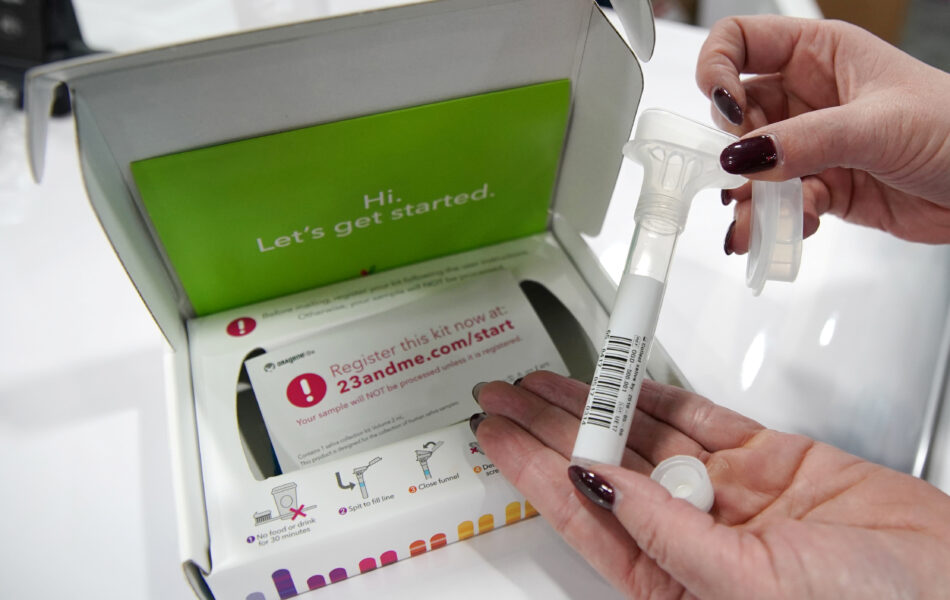

Selskapet har samlet inn norsk DNA. Nå går de konkurs. Hva skjer med dataene våre da?
Vi strør rundt oss med DNA, men vær varsom med hvor du får det analysert. Foto/illustrasjon: Marius Arnesen / NRKbeta

28. mars 2025
Hentet fra NRK Beta
PTØY!
En passe stor gugge av spytt renner forsiktig ned fra leppene dine, og lander perfekt i et lite reagensrør.
Du pakker den forsvarlig ned og sender den til USA. Deretter får du en grundig rapport om deg og din genetikk. Hvilke sykdommer du er arvelig betinget for. Hvor slekta di kommer fra. Og kanskje oppdager du noen tidligere ukjente tanter på kjøpet?
Sånn holdt vi nordmenn på i stor skala, særlig for rundt ti år siden. Men nå er det slutt for en av pionerene i privat gentesting. Selskapet 23andMe er i ferd med å gå konkurs. Det har grunnlegger og toppsjef Anne Wojcicki offentliggjort på X.
Hva skjer da med alle de gamle spyttklysene våre?
Troverdig selskap
– Det verste er om det kan brukes til noe som går ut over familien, sier Eirik Solheim.
Han er teknologiekspert, foredragsholder og underviser på Høyskolen i Volda. Men tidligere jobbet han her i NRKbeta. Og er en av dem som har spyttet i glasset og sendt DNA-et sitt til 23andMe. For flere år siden har han skrevet om dette her på NRKbeta.
Solheim hadde møtt grunnleggeren av 23andMe på en konferanse, og ble imponert. Han ble ikke mindre imponert da pakka fra selskapet kom i posten, for et lite tiår siden.
– Det var veldig troverdig. Designet og brukervennligheten var veldig bra. Jeg spyttet i et lite reagensrør og sendte det tilbake. Så ventet jeg en uke eller to og kunne logge inn og se svarene, forteller han.
Solheim fikk vite om fjerne slektninger, han fikk bekreftet arvelige sykdommer i familien, og fikk vite hvor slekta er fra. Alt gjennom en liten spyttklyse. Det var gjennomarbeidet og proft og fullt av advarsler før du fikk vite noe du kanskje ikke ville vite.
– Det var fascinerende og interessant.
Vi strør rundt oss med DNA, men vær varsom med hvor du får det analysert. Bildet viser Eirik Solheim, og er laget i forbindelse med en tidligere artikkel om genanalyse her i NRKbeta. Foto/illustrasjon: Marius Arnesen / NRKbeta
Ikke redd for egen del
Siden har han angret.
– Det gikk sakte opp for meg at dette har konsekvenser for andre enn meg. Selv er jeg smurt ut over hele internett. Men jeg poster jo aldri bilder av barna mine. Etter hvert skjønte jeg at hvis disse dataene kom på avveie, så er det ikke bare meg det handler om.
Dermed gikk Solheim inn og slettet både data og spyttprøve hos 23andMe. Han har senere fått høre om folk som har funnet nære slektninger gjennom tjenester som denne. Og verre: Folk som har fått beskjed om at barna deres ikke egentlig er deres, genetisk.
– Jeg er ikke så redd for min egen del. Men hvis de blir brukt mot noen i familien min … nei.
Ingen kontroll
– Det er jo skremmende. Vi aner ikke hvem som kommer til å få tilgang til disse dataene nå som selskapet er i en konkursprosess.
Det sier Anne Marit Ryen, som er seniorrådgiver i Bioteknologirådet, til NRKbeta.
Hun forteller at selskapet 23andMe har 15 millioner kunder totalt. Vi vet ikke hvor mange av dem som er norske, men ifølge en undersøkelse fra Forbrukerrådet har rundt 300.000 nordmenn tatt en gentest av denne typen.
– Vi vet at veldig mange nordmenn synes dette er veldig spennende. Og 23andMe er et av de store selskapene, sier hun.
Anne Marit Ryen er seniorrådgiver i Bioteknologirådet. Foto: Bioteknologirådet
– Vi vet jo ikke hvem som nå kjøper dem. Det har man ingen kontroll på, sier Ryen.
– Hva kan skje med dataene derfra?
Verdien i selskapet ligger jo i de dataene. Så de må jo mest sannsynlig selge dem, sier Ryen.
Elon Musk med din DNA?
Hun sier en så stor samling DNA-prøver vil være svært verdifulle, både for selskaper som er interessert i forbrukeradferd, forskere og legemiddelfirmaer. De vil i tilfelle få veldig mye informasjon om deg og familien din, og deres helse.
– De sitter jo med hele DNAet til disse menneskene gjennom spyttprøven. Det er jo et uendelig potensial. Ditt DNA identifiserer deg, og man deler sitt DNA med sin familie. Vi vet heller ikke hvordan genetiske opplysninger kan brukes i fremtiden, siden feltet stadig utvikler seg.
Ryen forteller at flere amerikanske riksadvokater har informert kunder av selskapet om at de bør be selskapet slette deres gendata
– Vi oppfordrer nordmenn til å vurdere om de også vil følge den anbefalingen, sier Ryen.
23andMe har tilbudt kundene sine et lite sett som brukes til å sende inn spyttprøver. Deretter analyserer selskapet DNA-et ditt. (FOTO: NTB/REUTERS: George Frey)
På nettsidene til 23andMe er det fortsatt mulig å logge seg inn på profilen sin, og kreve å få sine data slettet. Også selve spyttprøven bør i tilfelle slettes, mener Ryen.
– Vi vet ikke om en ny kjøper vil tillate sletting av dataene. Så det er nå, før et salg skjer, at man har den muligheten, sier hun.
– Er det egentlig så farlig?
– Folk vil kanskje ikke se noen store personlige konsekvenser av dette i nærmeste fremtid. Men hva om selskaper som allerede har mye informasjon om deg kjøper disse dataene? Hva om noen som Elon Musk gjør det? Eller Alphabet eller Meta? De fleste av oss har en gratis konto hos ett eller flere av de store teknologiselskapene, sier Ryen.
Oppfordrer til sletting
Eirik Solheim, NRKbetas tidligere teknologiekspert, vil anbefale folk å slette dataene sine nå mens de kan.
– Ja, jeg vil jo det. Det er unødvendig å ha dataene der hvis firmaet går konkurs. Jeg løper ikke helt hysterisk ut og roper «Fy faen, nå må dere slette». Men når tjenesten er så usikker, så med mindre du har veldig gode grunner til å ha dataene der, så er det bare å slette dem, sier Solheim.